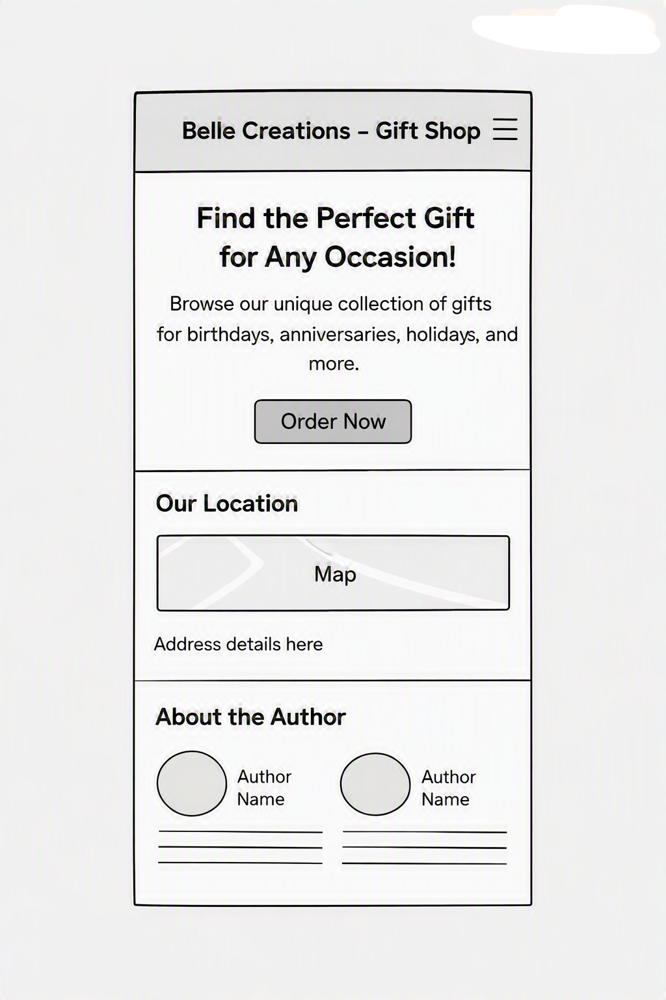
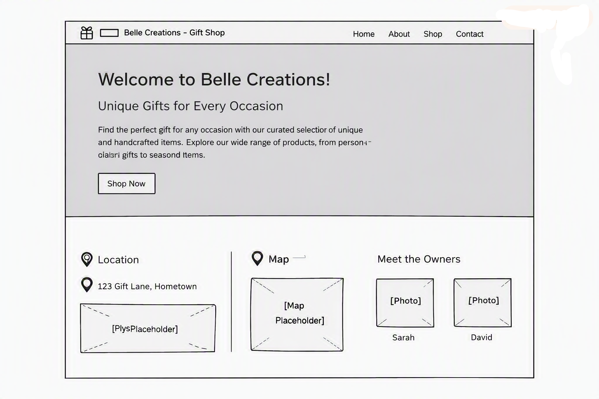

Site Name
The site name is Belle Creations - Gift Shop. It represents the brand identity and will be used consistently across the site for recognition and visibility.
Site Purpose
The purpose of the site is to showcase Belle Creations’ products, provide information about the shop, and allow customers to explore gift ideas. It will also highlight promotions, events, and membership opportunities.
Scenarios
- “Where can I find unique handmade gifts in Manta?”
- “Does Belle Creations offer seasonal promotions or discounts?”
Color Scheme
Primary colors selected:
- Steel Blue (#4682B4) → Used for headers and navigation background.
- White (#FFFFFF) → Used for text and content backgrounds.
- Gray (#808080) → Used for accents, footer, and secondary text.
Typography
Fonts selected:
- Lora (serif) → Used for titles and headings.
- Roboto (sans-serif) → Used for body text and paragraphs.
Wireframe
Below are wireframe sketches for the home page in mobile and desktop views:

